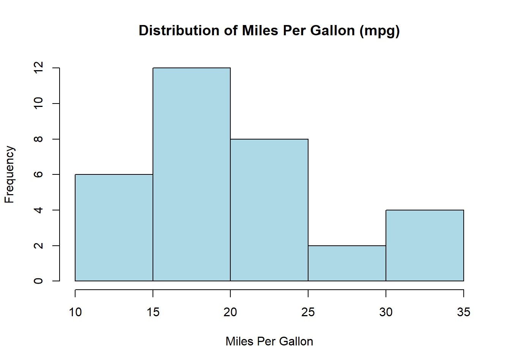
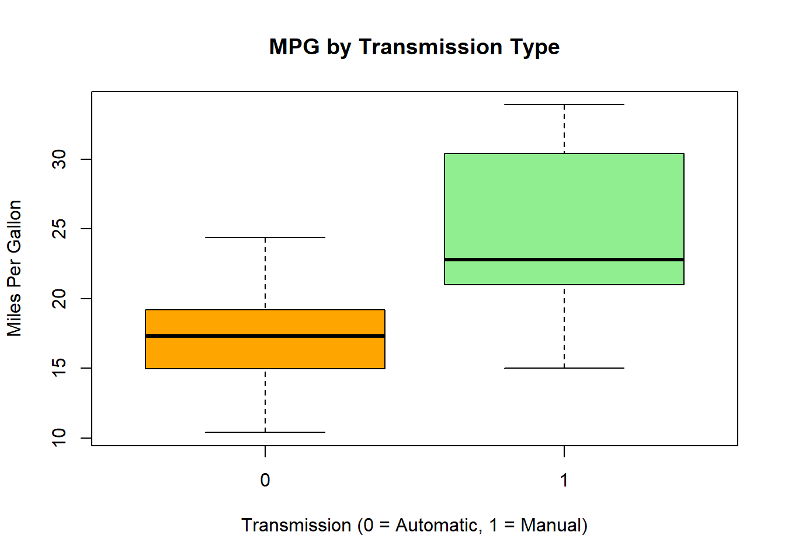

Statistics are a very important part of data analysis because they turn raw data into ideas that can be used. Statistical tools can help you make smart choices whether you’re summarizing data, seeing patterns, or testing theories. This guide teaches you basic statistical ideas using R. It focuses on t-tests, data visualization, and descriptive statistics, all while using a single dataset.
Dataset: mtcars
We will use the mtcars dataset that comes with R for this guide. There are factors like miles per gallon (mpg), number of cylinders, horsepower, and weight for 32 different car models in this dataset. This dataset is great for learning about basic statistical ideas and trying hypotheses.
First, let’s quickly look at the dataset:
# Load and view the mtcars datasetdata("mtcars")head(mtcars)
It’s important to understand the material we’re working with before we start the analysis. The following factors are in the mtcars dataset:
mpg: Miles per gallon
cyl: Number of cylinders
hp: Horsepower
wt: Weight (1000 lbs)
am: Transmission (0 = automatic, 1 = manual)
Descriptive Statistics
Descriptive statistics give an overview of the shape, central trend, and dispersion of a dataset’s distribution. Let’s figure out some important numbers that describe mpg, hp, and wt.
mpg hp wt
Min. :10.40 Min. : 52.0 Min. :1.513
1st Qu.:15.43 1st Qu.: 96.5 1st Qu.:2.581
Median :19.20 Median :123.0 Median :3.325
Mean :20.09 Mean :146.7 Mean :3.217
3rd Qu.:22.80 3rd Qu.:180.0 3rd Qu.:3.610
Max. :33.90 Max. :335.0 Max. :5.424
As you can see, this summary shows the mean, median, minimum, maximum, and quartiles for each measure. That is, the cars in this group get about 20.09 miles per gallon on average, with a range of 10.4 to 33.9.
Data Visualization
Visualizing data is an important part of figuring out how it is spread out and how different factors are related. To look into the mtcars collection, we’ll make a number of plots.
Histogram of mpg A histogram shows how a single numerical value is spread out.
# Histogram of miles per gallon (mpg)hist(mtcars$mpg, main ="Distribution of Miles Per Gallon (mpg)", xlab ="Miles Per Gallon", col ="lightblue")

Boxplot of mpg by Transmission You can compare distributions between groups with a boxplot. We will now compare the mpg of cars with automatic and manual engines.
# Boxplot of mpg by transmission typeboxplot(mpg ~ am, data = mtcars, main ="MPG by Transmission Type", xlab ="Transmission (0 = Automatic, 1 = Manual)", ylab ="Miles Per Gallon", col =c("orange", "lightgreen"))

Comparing Means with T-Tests
You can compare the means of different groups very well with T-tests. One-Sample, Independent Two-Sample, and Paired t-tests are the three main types of t-tests. Let’s use the mtcars dataset to look into each type.
One-Sample T-Test
One-Sample T-Test checks if the mean of a single sample is the same as a number that is already known. We might want to see if the mtcars dataset’s average miles per gallon (mpg) is significantly different from 20 mpg.
# One-sample t-testt_test_one_sample <-t.test(mtcars$mpg, mu =20)print(t_test_one_sample)
One Sample t-test
data: mtcars$mpg
t = 0.08506, df = 31, p-value = 0.9328
alternative hypothesis: true mean is not equal to 20
95 percent confidence interval:
17.91768 22.26357
sample estimates:
mean of x
20.09062
The main idea (H₀) here is that the average mpg is 20. If the p-value is less than the level of significance, which is usually 0.05, we disagree with the null hypothesis.
Independent Two-Sample T-Test
When you use the Independent Two-Sample T-Test, you compare the means of two separate groups. Let’s look at how many miles per gallon cars with automatic (am = 0) and manual (am = 1) engines get.
# Independent Two-Sample T-Testt_test_independent <-t.test(mpg ~ am, data = mtcars)print(t_test_independent)
Welch Two Sample t-test
data: mpg by am
t = -3.7671, df = 18.332, p-value = 0.001374
alternative hypothesis: true difference in means between group 0 and group 1 is not equal to 0
95 percent confidence interval:
-11.280194 -3.209684
sample estimates:
mean in group 0 mean in group 1
17.14737 24.39231
What does H₀ mean? It means that there is no change in the average mpg between the two types of transmission. There is a difference between the groups if the p-value is significant.
Paired T-Test
The Paired T-Test looks at how the means of the same group of people changed over time. Even though mtcars doesn’t have a built-in matched structure, let’s say we want to compare the mpg of two identical cars before and after a change. We don’t have this data, so let’s make it up to show what we mean.
# Simulating mpg before and after modificationset.seed(123)mpg_before <- mtcars$mpgmpg_after <- mpg_before +rnorm(length(mpg_before), 0, 2) # Adding small random noise# Paired t-testt_test_paired <-t.test(mpg_before, mpg_after, paired =TRUE)print(t_test_paired)
Paired t-test
data: mpg_before and mpg_after
t = 0.23758, df = 31, p-value = 0.8138
alternative hypothesis: true mean difference is not equal to 0
95 percent confidence interval:
-0.6075656 0.7677806
sample estimates:
mean difference
0.0801075
There is no difference in mpg before and after the change, which is the null hypothesis (H₀). If the p-value is significant, it means that the change made a meaningful difference.
Conclusion
Using the mtcars dataset, this guide has shown you how to use basic statistical ideas in R. We began with summary statistics, made a graph of the data, and used different t-tests to compare means. These tools give you a solid base for looking at data and coming to useful conclusions. As you learn more advanced statistical methods, keep in mind that these basic skills will still help you a lot as you go through your data analysis experience.
Resources & References:
“R for Data Science” by Garrett Grolemund and Hadley Wickham